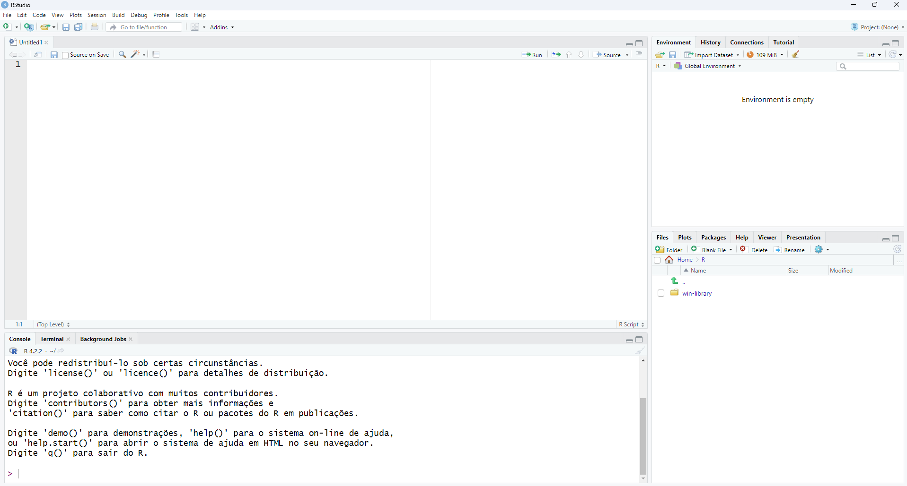

# Número inteiro representando quantidade de acoes em uma carteira
qtd_acoes <- 100
# Número de ponto flutuante representando a taxa de inflação
taxa_inflacao <- 3.5
# Verificando a classe de taxa_inflacao
class(taxa_inflacao)[1] "numeric"Para instalação, faça o download do R em http://www.r-project.org. Em seguida, instale a IDE (Integrated Development Environment) R Studio.
Ao abrir o RStudio, clique no menu File/ New File/ R Script (ou Ctrl+Shift+N). Você deve ver uma estrutura como a mostrada na figura abaixo.

Note que são quatro paineis:
Painel de Scripts (superior esquerdo): este painel é onde você pode escrever, editar e executar scripts R. Ele fornece recursos como destaque de sintaxe, autocompletar e verificação de código para ajudar na escrita de código.
Painel de Console (inferior esquerdo):o console é onde o código R é executado e os resultados são exibidos. Você pode inserir comandos diretamente aqui e ver imediatamente os resultados. Ele também mantém um histórico de comandos executados, o que pode ser útil para referência futura.
Ambiente/Workspace (superior direito): este painel exibe informações sobre os objetos (como variáveis, funções, etc.) atualmente carregados na memória do R. Ele mostra detalhes como o nome do objeto, tipo de objeto e seu valor atual. Isso é útil para monitorar e gerenciar objetos durante uma sessão de trabalho.
Arquivos/Plots/Pacotes/Ajuda (inferior direito): um painel com diversas funcionalidades.
Arquivos: Esta guia permite navegar e gerenciar os arquivos do seu projeto. Você pode criar, renomear, excluir e organizar arquivos e pastas diretamente dentro do RStudio.
Gráficos (Plots): Aqui são exibidos os gráficos gerados pelo R. Quando você cria um gráfico usando funções de visualização em R, o resultado é exibido nesta guia. Isso facilita a análise visual dos seus dados e a inspeção dos gráficos durante o processo de criação.
Pacotes: Nesta guia, você pode visualizar e gerenciar os pacotes instalados no seu ambiente R. Ela exibe uma lista de todos os pacotes instalados, juntamente com sua versão e status (carregado ou não). Além disso, você pode instalar novos pacotes, atualizar pacotes existentes e carregar ou descarregar pacotes conforme necessário para o seu trabalho.
Ajuda (Help): Esta guia fornece acesso rápido à documentação e às informações de ajuda sobre funções, pacotes e outros recursos do R. Você pode pesquisar por tópicos específicos e acessar a documentação oficial diretamente no RStudio. Isso é útil para obter informações sobre a sintaxe de uma função, exemplos de uso e detalhes sobre os parâmetros disponíveis.
Sempre que estiver aprendendo uma nova linguagem, procure primeiro saber quais são os tipos de dados básicos que podem ser representandos nessa linguagem.
Em R, são quatro os tipos básicos de dados disponíveis: numéricos, lógicos, caracteres e fatores.
Os dados numéricos (numeric) são usados para expressar valores quantitativos, como preços, taxas e quantidades, sendo representados por números inteiros ou decimais.
# Número inteiro representando quantidade de acoes em uma carteira
qtd_acoes <- 100
# Número de ponto flutuante representando a taxa de inflação
taxa_inflacao <- 3.5
# Verificando a classe de taxa_inflacao
class(taxa_inflacao)[1] "numeric"A função class() é usada para determinar a classe de uma variável. Em outras palavras, ela fornece informações sobre o tipo de dado que uma variável representa. Nesse caso acima, a variável taxa_inflacao é da classe numeric.
Os dados lógicos (logical) são empregados para representar estados ou condições, como verdadeiro ou falso, sendo úteis em operações de lógica e comparação.
# Verificando se a taxa de juros está aumentando
taxa_juros_aumentando <- TRUE
# Verificando se o preço das ações está caindo
queda_preco_acoes <- FALSE
# Verificando a classe de queda_preco_acoes
class(queda_preco_acoes)[1] "logical"Já os dados do tipo caractere (character) são utilizados para representar texto, como nomes de países, empresas ou categorias, sendo essenciais em análises descritivas e comunicação de resultados.
# Nome de um país
pais <- "Brasil"
# Nome de uma empresa multinacional
empresa <- "Petróleo Brasileiro S.A."
# Verificando a classe de pais
class(pais)[1] "character"Os fatores (factor) são empregados para representar variáveis categóricas, como classificações, categorias ou grupos, uma forma eficiente de lidar com dados discretos e qualitativos.
# Classificação do risco de crédito de uma empresa
risco_credito <- factor(c("Baixo", "Médio", "Alto", "Baixo", "Alto"))
# Verificando a classe de risco_credito
class(risco_credito)[1] "factor"A função levels() retorna os níveis (ou categorias) de um fator. Isso é útil para entender quais são as categorias representadas pelo fator e para realizar operações de manipulação de dados com base nessas categorias.
# Exibindo os níveis de risco de crédito
levels(risco_credito)[1] "Alto" "Baixo" "Médio"O ambiente R refere-se ao espaço de trabalho onde todas as variáveis, funções e objetos criados durante uma sessão R são armazenados e manipulados. O ambiente inclui tanto os objetos que você criou quanto os que são carregados automaticamente por meio de pacotes ou outros mecanismos de importação de dados (mais sobre pacotes a seguir).
Por exemplo, ao usar a função ls() (que lista os nomes dos objetos no ambiente atual), podemos ver todos os objetos atualmente presentes no ambiente R.
ls()Se você executou corretamente todos os comandos da Seção sec-tipodedados, deve obter como resultado no console o seguinte:
[1] "empresa" "pais" "qtd_acoes"
[4] "queda_preco_acoes" "taxa_inflacao" "taxa_juros_aumentando"
usando R como calculadora numeros especiais
Na sec-tipodedados algumas variáveis foram criadas. Por exemplo a variável empresa que armazena uma cadeia de caracteres. Você viu, anteriormente a maneira de listar todas as variáveis definidas no seu ambiente. Mas, afinal, o que são variáveis?
No R, variáveis são elementos fundamentais usados para armazenar e manipular dados. Elas são como recipientes que guardam valores, objetos ou expressões. Quando você atribui um valor a uma variável, está basicamente dando um nome a esse valor para poder acessá-lo e manipulá-lo posteriormente.
Por exemplo, ao escrever preco_acao <- 10, você está criando uma variável chamada preco_acao e atribuindo a ela o valor 10. Agora, sempre que você usar preco_acao em seu código, estará se referindo a esse valor.
Uma prática comum escolher nomes descritivos para variáveis que ajudem a entender seu propósito ou conteúdo. Por exemplo, em um contexto econômico, você pode usar preco_acao para representar o preço de uma ação ou taxa_inflacao para representar a taxa de inflação.
Para atribuir um valor a uma variável, use o operador <-. O operador = também pode ser usado para atribuir valores a variáveis. Ambos os operadores têm o mesmo efeito prático na atribuição de valores a variáveis em R. A escolha entre eles geralmente se resume à preferência pessoal e ao estilo de codificação, embora alguns guias de estilo de código sugiram o uso do <-.
Vamos usar as funções da família is.* para vericar os tipos de algumas das variáveis que estão no nosso ambiente de trabalho.
empresa:is.character(empresa)Isso retornará TRUE se a variável empresa for do tipo caractere (character).
pais:is.character(pais)Assim como para a variável empresa, isso retornará TRUE se a variável pais for do tipo caractere.
qtd_acoes:is.numeric(qtd_acoes)Isso retornará TRUE se a variável qtd_acoes for do tipo numérico (numeric).
queda_preco_acoes:is.logical(queda_preco_acoes)Isso retornará TRUE se a variável queda_preco_acoes for do tipo lógico (logical).
taxa_inflacao:is.numeric(taxa_inflacao)Assim como para a variável qtd_acoes, isso retornará TRUE se a variável taxa_inflacao for do tipo numérico.
taxa_juros_aumentando:is.logical(taxa_juros_aumentando)Isso retornará TRUE se a variável taxa_juros_aumentando for do tipo lógico.
Esses exemplos ilustram como você pode usar as funções is.* para verificar o tipo de variáveis, ajudando a garantir que você esteja manipulando os dados corretamente em suas análises.
Outra família de funções importantes é a das funções as.*. Elas são usadas para converter um objeto de um tipo para outro. Elas permitem que você altere o tipo de dado de uma variável, o que pode ser útil em várias situações, como quando você precisa realizar operações específicas que exigem um determinado tipo de dado ou quando deseja garantir a consistência dos tipos de dados em seu código.
Algumas das funções as.* mais comuns incluem:
as.character(): Converte um objeto para o tipo caractere (character).numero <- 123
numero_caractere <- as.character(numero)as.numeric(): Converte um objeto para o tipo numérico (numeric).texto <- "3.14"
numero <- as.numeric(texto)as.logical():numero <- 0
logico <- as.logical(numero)Essas funções são úteis para garantir que os tipos de dados estejam corretos em seu código e para garantir que você possa realizar as operações desejadas em seus objetos. No entanto, é importante observar que nem todas as conversões podem ser bem-sucedidas, especialmente quando há perda de informações (por exemplo, ao converter de caractere para numérico). Portanto, é sempre uma boa prática verificar se a conversão foi feita corretamente e se os dados resultantes são os esperados.
Veja um exemplo de conversão de caractere para numérico com texto não numérico:
texto <- "abc"
numero <- as.numeric(texto)Warning: NAs introduzidos por coerçãoNeste exemplo, a tentativa de converter o texto “abc” para um número resultará em um valor NA (Not Available), indicando que a conversão falhou. Veja que a saída do console indica uma mensagem de warning.
Em toda análises de dados, é comum lidar com conjuntos de dados que possuem diferentes estruturas e formatos. Vamos explorar quatro estruturas de dados fundamentais em R: vetor, matriz, lista e DataFrame.
Um vetor em R é uma estrutura de dados unidimensional que armazena uma sequência ordenada de elementos do mesmo tipo. A função c nos ajuda a criar vetores.
# Vetor de preços de ações
precos_acoes <- c(100, 110, 105, 120, 115)Em alguns casos, é de interesse definir sequências de números usando os operadores : e a função seq().
# Vetor de números de 1 a 10
sequencia <- 1:10
sequencia [1] 1 2 3 4 5 6 7 8 9 10# Vetor de números de 1 a 10 com incremento de 2
sequencia_incremento <- seq(from = 1, to = 10, by = 2)
sequencia_incremento[1] 1 3 5 7 9Para verificar o tamanho de um vetor, você pode usar a função length().
# Verificando o tamanho do vetor de preços de ações
length(precos_acoes)[1] 5length(1:10)[1] 10Para acessar elementos em um vetor em R, você pode usar índices numéricos ou lógicos dentro dos colchetes [ ].
Você pode acessar elementos usando índices numéricos dentro dos colchetes [ ]. Por exemplo, vetor[i] acessa o elemento na posição i do vetor.
# Vetor de preços de ações
precos_acoes <- c(100, 110, 105, 120, 115)
# Acessando o segundo elemento do vetor
segundo_elemento <- precos_acoes[2]
# Acessando uma série de elementos do vetor
varios_elementos <- precos_acoes[3:5]Você também pode acessar elementos usando índices lógicos dentro dos colchetes [ ]. Por exemplo, vetor[indices_logicos] retorna os elementos do vetor onde os índices lógicos são TRUE.
# Acessando preços de ações maiores que 110
precos_maior_que_110 <- precos_acoes[precos_acoes > 110]Uma matriz em R é uma estrutura de dados bidimensional que consiste em linhas e colunas de elementos do mesmo tipo. É útil para representar conjuntos de dados tabulares, como dados de séries temporais ou matrizes de covariância.
# Matriz de retornos de ativos
retornos_ativos <- matrix(c(0.05, 0.03, 0.02, 0.04, 0.06, 0.03),
nrow = 2, byrow = TRUE)
rownames(retornos_ativos) <- c("Ação 1", "Ação 2")
colnames(retornos_ativos) <- c("Ano 1", "Ano 2", "Ano 3")O código acima cria uma matriz chamada retornos_ativos que armazena os retornos de dois ativos ao longo de três anos.
A função matrix() é usada para criar a matriz. O vetor c(0.05, 0.03, 0.02, 0.04, 0.06, 0.03) contém os valores dos retornos dos ativos, fornecidos em ordem de preenchimento de coluna (de cima para baixo). Os parâmetros nrow = 2 e byrow = TRUE indicam que a matriz deve ter 2 linhas (para representar os dois ativos) e que os valores devem ser preenchidos por linha (ou seja, primeiro os retornos para o ano 1, depois para o ano 2 e assim por diante). As funções rownames() e colnames() são usadas para atribuir nomes às linhas e colunas da matriz, respectivamente. No caso das linhas, são atribuídos os nomes “Ação 1” e “Ação 2”, representando os dois ativos. Para as colunas, são atribuídos os nomes “Ano 1”, “Ano 2” e “Ano 3”, representando os anos em que os retornos foram registrados.
A função class() retorna a classe do objeto, que neste caso será “matrix”, indicando que retornos_ativos é uma matriz em R.
A função dim() retorna as dimensões da matriz, ou seja, o número de linhas e colunas.
# Verificando as dimensões da matriz
dim(retornos_ativos)[1] 2 3Neste caso, o resultado será [2, 3], indicando que a matriz possui 2 linhas e 3 colunas.
As funções nrow() e ncol() retornam o número de linhas e colunas da matriz, respectivamente.
c(nrow(retornos_ativos), ncol(retornos_ativos))[1] 2 3A função length() retorna o número total de elementos em um objeto. Para uma matriz, isso retornará o número total de elementos, ou seja, o produto do número de linhas pelo número de colunas.
length(retornos_ativos)[1] 6Para acessar linhas, colunas e elementos em uma matriz em R, você pode usar índices numéricos ou nomes (se definidos). Aqui está como fazer:
# Acessando a primeira linha da matriz
primeira_linha <- retornos_ativos[1, ]
# Acessando a segunda coluna da matriz
segunda_coluna <- retornos_ativos[, 2]
# Acessando o elemento na segunda linha e terceira coluna da matriz
elemento <- retornos_ativos[2, 3]# Acessando a linha chamada "Ação 1"
acao1 <- retornos_ativos["Ação 1", ]
# Acessando a coluna chamada "Ano 2"
ano2 <- retornos_ativos[, "Ano 2"]
# Acessando o elemento na linha "Ação 2" e coluna "Ano 3"
elemento2 <- retornos_ativos["Ação 2", "Ano 3"]Em R, diferente de outras linguagens de programação, os índices de linhas e colunas em matrizes (e também em vetores, listas, etc.) começam em 1 e não em 0. Isso significa que o primeiro elemento de uma matriz está no índice 1, o segundo no índice 2, e assim por diante
Em R, uma lista é uma estrutura de dados flexível que pode conter elementos de diferentes tipos, como vetores, matrizes, outras listas e até mesmo funções. As listas são úteis quando você precisa armazenar e manipular conjuntos de dados heterogêneos ou estruturas complexas.
Podemos criar uma lista que armazena informações sobre um país, como seu nome, PIB, taxa de inflação e uma série temporal de valores de câmbio.
# Criando uma lista com informações sobre um país
pais_info <- list(
nome = "Brasil",
pib = 1609,
inflacao = 0.05,
cambio = c(4.86, 5.13, 5.20, 5.07, 4.97)
)Neste exemplo, pais_info é uma lista que contém quatro elementos:
nome: o nome do país (tipo caractere).pib: o Produto Interno Bruto do país (tipo numérico).inflacao: a taxa de inflação do país (tipo numérico).cambio: uma série temporal de valores de câmbio do país (tipo vetor numérico).Esta lista exemplifica como podemos armazenar diferentes tipos de dados em uma lista em R. Ela pode ser usada para representar informações econômicas de um país de forma organizada e acessível.
Para acessar elementos individuais em uma lista pelo nome, usamos o operador de dólar $.
# Acessando o nome do país
pais_info$nome[1] "Brasil"# Acessando o PIB do país
pais_info$pib[1] 1609Também podemos acessar elementos individuais em uma lista por índice usando colchetes [ ].
# Acessando o primeiro elemento da lista (nome do país)
primeiro_elemento <- pais_info[[1]]
# Acessando o terceiro elemento da lista (taxa de inflação)
terceiro_elemento <- pais_info[[3]]Você deve ter notado o uso de colchetes duplos para acessar os elementos da lista. Em R, os colchetes simples ([]) e duplos ([[]]) têm diferentes propósitos quando usados para acessar elementos em uma lista.
Em resumo, os colchetes simples são usados para acessar subconjuntos de elementos em uma lista, preservando sua estrutura, enquanto os colchetes duplos são usados para acessar valores individuais de uma lista, sem preservar a estrutura original.
vetor, matriz, listas, dataframe
utilizando R como calculadora, números especiais
utilize a funcao class e avalie a diferenca entre pais_info[1] e e pais_info[[2]]